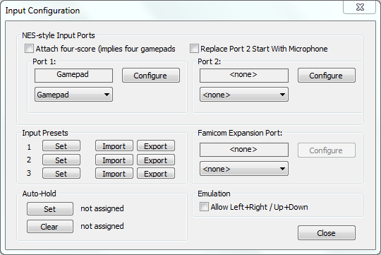
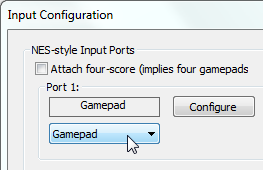
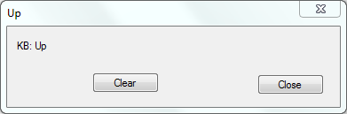
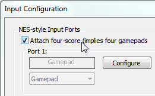
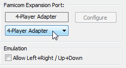
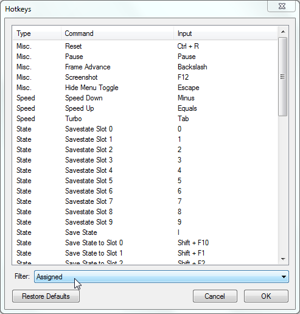
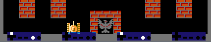
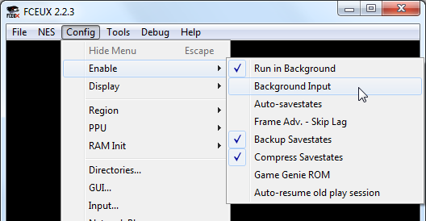

Содержание
Беспроводной или USB геймпад нужно подключать до запуска эмулятора, иначе эмулятор его не увидит.
В эмуляторе выбери Config -> Input. Откроется окно Input Configuration.

В разделе Port 1 убедись, что включена опция Gamepad.

Далее нажми кнопку Configure, откроется окно Gamepad.
В разделе Virtual Gamepad 1 кликни на одну из 8-ми кнопок, например кнопку Up (вверх), окроется дополнительное окошко Up.

Кнопка Clear сбрасывает настройки кнопки, кнопка Close сохраняет настройки.
Здесь дважды нажми на клавиатуре/геймпаде ту клавишу, которая будет отвечать за кнопку Up в игре. Окошко автоматически закроется.
Аналогичным образом настрой управление на оставшиеся кнопки. После завершения настройки закрой окно Gamepad.
При желании можно назначить до 4-х различных клавиш. Для этого нужно по одному разу нажимать на те клавиши клавиатуры/геймпада, которые тебе нужны. Можно настроить управление одновременно и на клавиатуре, и на геймпаде.
Для завершения настройки дважды нажми на последнюю используемую клавишу, или кликни на кнопку Close. Настройка автоматически закроется, если были настроены все 4 клавиши.
Настройки управления для 2-го игрока настраиваются точно также, как и для 1-го игрока.
В окне Input Configuration, в разделе Port 2 выбираешь опцию Gamepad, жмешь кнопку Configure, и настраиваешь управление 2-му игроку в разделе Virtual Gamepad 2.
Настройки для 3-го игрока выставляются там же, где и для 1-го, в разделе Virtual Gamepad 3, а для 4-го игрока там же, где и для 2-го, в разделе Virtual Gamepad 4.
В моем эмуляторе клавиши 1-го игрока = клавиши 3-го игрока, а клавиши 2-го игрока = клавиши 4-го игрока.
Но чтобы управление 3-го и 4-го заработало в игре, нужно дополнительно выставить одну из двух опций в окне Input Configuration.
Первая опция - Attach four-score. По умолчанию галочка не стоит.

Вторая опция - 4-Player Adapter. По умолчанию None.

В зависимости от игры, нужно выбрать одну из этих опций. Если ты выбрал первую опцию, а управление в игре не заработало, значит ты не угадал. Отключи ее и выбери вторую опцию.
Эти 2 опции могут конфликтовать между собой, выбирай только одну из них.
Некоторые твои настроенные клавиши могут конфликтовать с горячими клавишами эмулятора.
В эмуляторе выбери Config -> Map Hotkeys -> Filter -> Assigned.

Здесь отображен список настроенных горячих клавиш. Просмотри список, и при необходимости переназначь/удали горячие клавиши, которые пересекаются с твоим управлением игроков. Или же настрой управление на другие клавиши.
Внизу окна эмулятора можно отображать нажатые кнопки 1-му игроку, 1-му и 2-му игроку, или всем 4-м игрокам. В эмуляторе выбери Config -> Display -> Input Display.

По умолчанию окно эмулятора должно быть в фокусе, иначе управление не будет работать.
Чтобы управление считывалось в любом случае, включи опцию Config -> Enable -> Background Input.
